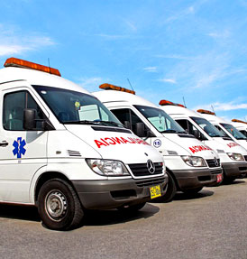

Historia

Misión Médica es una empresa de atención de emergencias prehospitalarias que inició sus actividades en la ciudad de Lima el 18 de Octubre del año 2003 dedicándose en exclusiva a la atención de emergencias y urgencias a bordo de ambulancia. Nació con el propósito de elevar los estándares de atención y traslado de pacientes hasta entonces visto de acuerdo a las normas internacionales bajo el concepto de brindar servicios de excelencia a pacientes en estado de emergencia que así lo requieran. Esto nos ha permitido ser reconocidos en el mercado y posicionarnos como principal proveedor de servicios de atención de emergencias de las principales compañías de seguro, clínicas, instituciones, empresas y familias.
En la actualidad contamos con la Certificación ISO 9001: 2008 en el alcance de “atención de Emergencias Pre Hospitalarias a bordo de ambulancias”, siendo la primera empresa de ambulancias en el Perú y Latinoamérica en contar con esta certificación en el alcance mencionado.
Nuestra empresa cuenta con personal humano calificado con amplia experiencia y capacitado en el manejo de urgencias-emergencias así como también con Unidades Médicas tipo II y tipo III debidamente equipadas de acuerdo a lo señalado en el Reglamento Nacional para el transporte asistido de pacientes por vía terrestre.
El futuro se muestra más que prometedor para Misión Médica, las perspectivas de crecimiento se ven sostenidas por la satisfacción de nuestros clientes y pacientes que es la razón de ser de nuestra Empresa. Seguir perfecccionamiento los servicios que brindamos y hacerlos llegar a más pacientes es nuestro gran reto. Seguir orientados por la calidad total y la mejora continua nos ayudará a seguir creciendo, mejorando y consolidarnos en el mercado de atención de emergencias pre hospitalarias como una empresa competitiva y de vanguardia enfocada en brindar bieniestar a los pacientes y usuarios que lo requieran.
Misión y visión
Misión
Somos profesionales de la salud capacitados y entrenados en atención prehospitalaria de emergencia a bordo de ambulancias totalmente equipadas para salvar la vida de nuestros pacientes en el menor tiempo posible.
Visión al 2015
Ser una empresa eficaz y eficiente en la atención prehospitalaria de emergencias a bordo de ambulancias, manteniendo la excelencia de nuestros servicios, brindando una atención oportuna y de calidad a nuestros pacientes, buscando la máxima satisfacción de nuestros clientes.
Política de calidad
En Misión Médica orientamos nuestros conocimientos y esfuerzo a ser lideres en el mercado de atenciones prehospitalarias de emergencias a bordo de ambulancias con personal altamente capacitado, soportado por equipamiento acorde a normas nacionales e internacionales y un sistema de gestión de la calidad comprometido con la mejora continua, buscando la plena satisfacción de nuestros clientes: Pacientes, Empresas y Compañías de Seguros.
Nuestros valores
Los valores que rigen en Misión Médica son:
- Respeto al cliente
- Trabajo en equipo
- Responsabilidad
- Compromiso
- Integridad